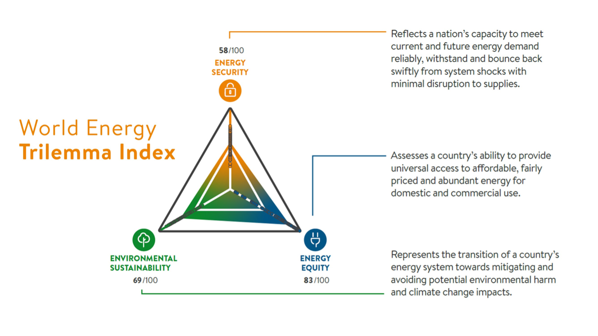
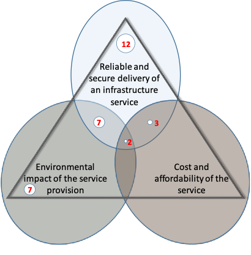
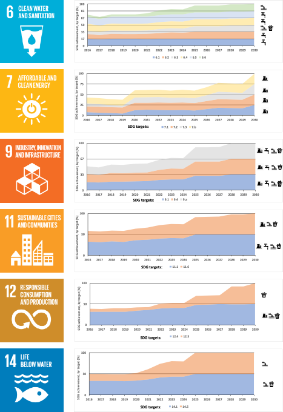

This lecture will demonstrate how we can place infrastructure assessment in the context of sustainable development through the development of appropriate indicators. This approach can be used by national governments to develop a national vision for sustainable infrastructure which incorporates a multi-dimensional, multi-sectoral approach.
To recognise the benefits of using metrics of infrastructure performance set within a sustainable development framing
To identify the contributions of infrastructure sectors and the ‘pillars of sustainability’ to infrastructure assessment within Sustainable Development Goal (SDG) targets.
A wide variety of metrics can be used to assess national infrastructure performance and shape the implementation strategies for future projects and policies. The last lecture (mini-lecture 5.1) introduced how sustainability criteria are increasingly applied to indicator selection. Numerous government agencies now use the universally-recognised Sustainable Development Goal (SDG) framework to define a sustainable infrastructure vision as part of their national development. Similarly, Non-Governmental Organisations (NGOs) and the private sector increasingly aim to incorporate sustainability objectives into their vision and operation (UNDP 2016; Busco et al. 2017).
In order to operationalise the 2030 Agenda for implementation at the global, regional, national, and sub-national levels, data-driven measurement tools and indicators have been developed to track progress and to identify gaps in indicator availability and coverage (Schmidt-Traub et al. 2017; Cassidy 2014). These tools and indicators aim to tackle the challenges of assessing global progress toward the SDGs and of quantifying “full” SDG achievement. While SDG targets are applied to all, including developed countries, they are assessed according to the nature and balance of the challenges they represent in each national context. Within each SDG, the UN has assigned multiple indicators as a means to measure achievement. However, these indicators generally reflect existing global datasets rather than ideal measures.
In the context of infrastructure, the 2030 Agenda provides a useful framework for informed decision-making, planning and implementation. It can be used as a means of measuring the potential impacts of investments and policies on long-term development objectives and is applicable to a range of international contexts and development challenges (Adshead et al. 2019). However, careful indicator development is necessary to ensure that future infrastructure provision reflects a wide range of sustainability criteria
The World Energy Council’s ‘Energy Trilemma Index’ gives an example of how infrastructure planning can be framed around multiple indicators of sustainability, in this case, energy security, universal access to affordable energy services and environmentally sensitive production and use of energy (World Energy Council 2017) (Figure 5.2.1). Importantly, it restructures traditional cost-benefit analysis to present the types of trade-offs that decision-makers must navigate to deliver on each of these dimensions, with implications for policy coherence and integrated policy innovation. Although the three pillars of sustainability are reflected in the trilemma, the core ideas underlying these concepts are not interchangeable. For instance, security of supply in the context of infrastructure provision does not contribute exclusively to the development of social well-being – it also allows firms to benefit from reliable infrastructure services required to ensure economic growth (Adshead et al. 2019).

Figure 5.2.1: The ‘Energy Trilemma Index’ developed by the World Energy Council (World Energy Council 2017)
The ‘trilemma’ concept has been used to structure infrastructure assessment in other sectors such as transport (Bryce, Flintsch, and Hall 2014) and water (Ives, Simpson, and Hall 2018), since similar sets of trade-offs between attributes of infrastructure performance extend across the wider infrastructure system.
In the context of achieving the SDGs, this concept highlights a key challenge among infrastructure decision-makers: how to assign indicators which ensure that multiple sustainability dimensions are captured, which is a feature of most SDG targets. The relative importance of each dimension in assessing target achievement is often not explicitly defined within the SDG framework and will ultimately depend on the national or regional context. Similarly, an SDG target is seldom achieved through the contribution of a single infrastructure sector. In fact, many SDGs require inputs more broadly from across the infrastructure system.
Here, we look at examples of infrastructure-linked SDG targets that are framed around one or more sustainability dimensions, summarised in Figure 5.2.2. These are important to understand in order to assign relevant indicators that capture all dimensions of the target.
Some SDG targets are one-dimensional, meaning they can be measured or proxied by a single metric, assessing target achievement in terms of a) provision of a required quantity of the infrastructure service; b) environmentally sustainable delivery of the infrastructure service; or c) the affordability and accessibility of the infrastructure service to those who depend on it.
For example, target 7.2 (“By 2030, increase substantially the share of renewable energy in the global energy mix”) addresses solely the environmental dimension of sustainability within the energy sector. Target 6.1 (“By 2030, achieve universal and equitable access to safe and affordable drinking water for all”), on the other hand, specifies a need for at least two ways to measure performance of the water sector, covering both adequate provision of the service and its affordability. Target 11.2 (“By 2030, provide access to safe, affordable, accessible and sustainable transport systems for all, improving road safety, notably by expanding public transport, with special attention to the needs of those in vulnerable situations, women, children, persons with disabilities and older persons”) incorporates all three sustainability dimensions. This implies that the target outcome cannot be evaluated without assessing the affordability, environmental impact and level of service provision within the transport sector.

Figure 5.2.2: Number of infrastructure-linked SDG targets that incorporate a focus on service delivery, cost and affordability, and environmental impact. Adapted from Adshead et al. (2019).
The construction of indicators to measure infrastructure performance in sustainable development terms similarly requires consideration of how many, and which, infrastructure sectors are required to achieve the SDG target (Adshead et al. 2019). In some cases, the infrastructure service provided by a sector may be substitutable by another, while in others, each relevant sector is required.
Some targets focus exclusively on a single sector, for example 5.b (“Enhance the use of enabling technology, in particular information and communications technology, to promote the empowerment of women”). In this case, the performance of the digital communications sector is assessed.
Targets may also incorporate individual or interdependent contributions from multiple sectors, as in 6.2 (“By 2030, achieve access to adequate and equitable sanitation and hygiene for all and end open defecation, paying special attention to the needs of women and girls and those in vulnerable situations”). In this case, adequate performance of water and wastewater systems is required for target achievement.
Finally, SDG targets may refer to system-wide infrastructure without specifying the contribution of particular sectors, e.g. 9.1 (“Develop quality, reliable, sustainable and resilient infrastructure, including regional and transborder infrastructure, to support economic development and human well-being, with a focus on affordable and equitable access for all”). These targets are more difficult to assess in terms of a specific infrastructure sector intervention. They imply that all networked infrastructure systems, as well as the non-networked social and economic infrastructure that rely on them, are functioning at a suitable level.
This complex relationship between infrastructure sectors and development outcomes across a range of sustainability dimensions means that decision-makers require a systematic approach to indicator design in order to provide a suitable assessment of national infrastructure performance within the SDG context.
This section demonstrates how these considerations have been taken into account to assess infrastructure, and to inform planning within a national vision of sustainable development.
The SDG targets provide an extensive list of sustainability attributes valued by policymakers around the world, with a subset of these able to be directly addressed through the provision of infrastructure. Decision-makers must therefore prioritise and assign value to each attribute in order to assess the scope of interventions required in a particular sector to achieve the desired objectives – the affordability of a service, reliability of service provision, the environmental sustainability of a system, and so on.
However, in each context, the unique value of these sustainability attributes, and their relative importance to national development objectives, must be ascertained. Indicators that provide a direct or proxied measure of the consequences of infrastructure allow us to understand to what extent sustainability objectives are, or need to be, satisfied. Decision-makers in each country or context are ultimately best-placed to determine priorities for development, and to apply appropriate weighting to the clusters of attributes or required actions by sector.
In the example below, of the small island of Curaçao, a number of infrastructure investments and policies have been selected to achieve a development vision based on the SDGs (Figure 5.2.3). Contributing either individually or as a system, these infrastructures have been chosen and sequenced to ensure that all infrastructure-linked targets across SDGs 6, 7, 9, 11, 12, and 14 have been fulfilled according to the outcomes they aim to achieve. Thus, an ‘SDG indicator’ can be constructed to merge infrastructure and sustainable development planning (Adshead et al. 2019).

Figure 5.2.3: Target contribution to SDGs for Curaçao, showing trajectory to achievement of infrastructure-linked targets. Required individual or interdependent sector inputs are displayed for each target along the right-hand side. Adapted from Adshead et al. (2019).
This lecture has demonstrated how a broader framing of infrastructure performance, with consideration of the impact of infrastructure sectors on sustainability dimensions, is key to placing infrastructure at the heart of the Sustainable Development Goals. This can help decision-makers better assess gaps in infrastructure achievement, and quantify actions, such as investments and policies, that can be taken to fully achieve certain SDGs and targets within a country context.